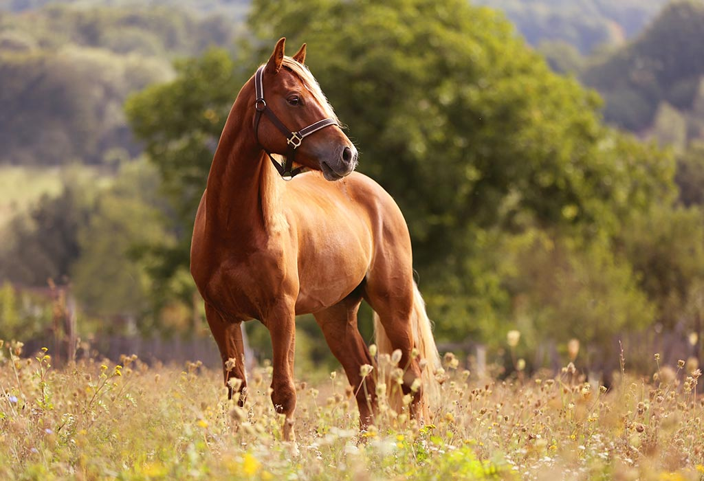

Horses are hoofed mammals that have lived with humans for
thousands of years.
Almost all of the horses alive today are domesticated and descend from
extinct wild horses. Horses have roamed the planet for about 50
million years.
Horses are adapted to run, allowing them to quickly escape
predators, and possess an excellent sense of balance and a strong
fight- or-flight response.
Related to this need to flee from predators in the wild is an unusual
trait: horses are able to sleep both standing up and lying down, with
younger horses tending to sleep significantly more than
Horse
